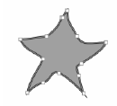
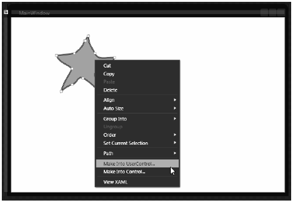
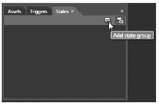
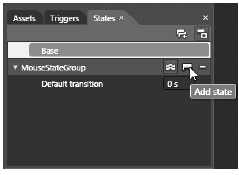
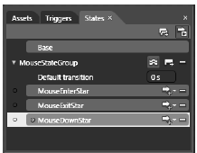
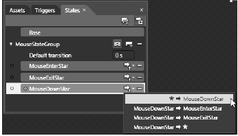
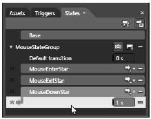
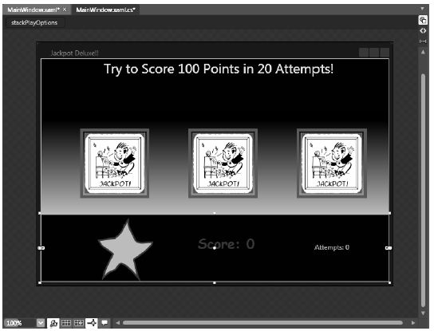
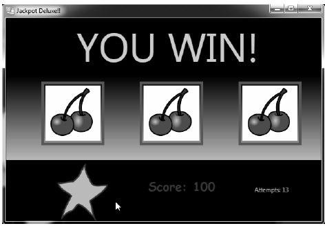
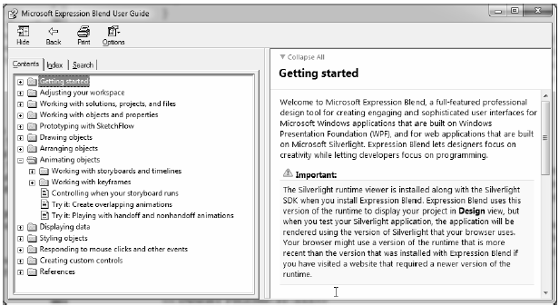

Create a brand new WPF Application project named JackpotDeluxe using Expression Blend, and set a reference to MyCustomControl.dll using the Project | Add Reference… menu option. Because your control is defined in an external assembly, update the opening element of the Window to define a new XML namespace named custom that maps to your MyCustomControl namespace:
<Window xmlns="http://schemas.microsoft.com/winfx/2006/xaml/presentation" xmlns:x="http://schemas.microsoft.com/winfx/2006/xaml" xmlns:custom="clr-namespace:MyCustomControl;assembly=MyCustomControl" x:Class="JackpotDeluxe.MainWindow" x:Name="Window" Title="MainWindow" Width="640" Height="438"> <Grid/> </Window>
You will build your complete UI of this window in just a few moments; however, before you do, you will make one additional custom control.
Expression Blend has a number of very useful shortcuts that can make the process of building custom controls very simple. When you stop to think about it, the chances are very good that many custom controls begin life as a simple graphic created by a graphic artist. To illustrate, select your Grid in the Objects and Timeline editor, and then pick the Pencil tool in your Toolbox (which can be seen if you click and hold the Pen button). Use this tool to draw an interesting image of your liking. In Figure 31-24, you can see my (somewhat sad) attempt at rendering a star shaped image, with the Fill property set to an orange colored brush and the Stroke property set to a blue brush.
Figure 31-24 Using the Pencil control to render a unique shape
Now, if you look at the XAML which was generated on your behalf, you will see that Expression Blend defined a Path object. So let’s say that you would like to use this geometry as the starting point for a custom control. To so do, simply right click on the Path object on the designer, and select the Make Into … option (Figure 31-25).
Figure 31-25 Transforming a geometry into a new
As soon as you select this option, you will be asked to name your control, which I will assume is StarButton (you can leave all other settings of this dialog to their default values). Expression Blend will then create a brand new derived class with a corresponding XAML and C# code file! As well, the original Path object on the Window has been replaced with an instance of the new control, which is mapped to a new XML namespace in the MainWindow.xaml file:
<Window xmlns="http://schemas.microsoft.com/winfx/2006/xaml/presentation" xmlns:x="http://schemas.microsoft.com/winfx/2006/xaml" xmlns:custom="clr-namespace:MyCustomControl;assembly=MyCustomControl" xmlns:local="clr-namespace:JackpotDeluxe" x:Class="JackpotDeluxe.MainWindow" x:Name="Window" Title="MainWindow" Width="640" Height="438"> <Grid> <local:StarButton HorizontalAlignment="Left" Margin="102,41,0,0" VerticalAlignment="Top" Width="136" Height="131"/> </Grid> </Window>
You will build the real UI of your Window in just a moment, but leave this control in place for the time being.
Recall that one of the important tasks of custom control development is adding in visual cues for the end user. In an earlier example of this chapter, you added a few visual cues to a custom Button template by using WPF triggers. You could certainly use triggers for StarButton as well; however, as of .NET 4.0, WPF supports an alternative way to do so via visual state groups.
Note The concept of visual states was first introduced in the Silverlight API. Many felt that the use of visual states (and the related Visual State Manager) was a simpler alternative to WPF triggers, and therefore WPF incorporated this alternative approach into the API beginning with .NET 4.0.
Using WPF visual states, you are able to define a group of related states that your control could be in at any given time. Think of a visual state group as little more than a named container for related UI cues. Ultimately, the names of the groups you define are completely up to you; however, some common group names might include MouseStateGroup, FocusedStateGroup, or EnabledStateGroup.
Once you have defined a set of visual state groups, you then define the individual states for a specific group. For example, MouseStateGroup could define three possible mouse-centric states named MouseEnterStar, MouseExitStar, and MouseDownStar. The FocusedStateGroup might define two states named GainFocusStar and LoseFocusStar.
After you have defined the states for a group, you will then define storyboards that represent the UI cues that will occur when your control transitions into a given state. For example, you could create a storyboard for the MouseEnterStar state which causes the control to change color. Maybe you have a second storyboard for the MouseDownStar state, which causes the control to shrink (or grow) in size. You can use the integrated animation editor of Blend to quickly define each storyboard.
Once you have all of your states defined, you can then force your control to move into any given state using two approaches. If you wish to move between states in code, you can call the static GoToState() method of the VisualStateManager class. Simply specify the name of a state and the related storyboard will execute.
Note If you wish to transition between states using only markup, you can define triggers which will move between states using the GoToStateAction XAML element.
To add visual states to theS tarButton control, first ensure that the visual editor for your StarButton is the active window in the Blend IDE. Now, locate the States tab (which can be opened via the Windows menu of Expression Blend) and click the Add State Group button (Figure 31-26).
Figure 31-26 Adding a new visual state group
Now, change the name of the generated group (currently named VisualStateGroup) to the more fitting name, MouseStateGroup. Once you do, notice the Add State button (Figure 31-27).
Figure 31-27 The MouseStateGroup
Using the Add State button, add three states to the MouseStateGroup, named MouseEnterStar, MouseExitStar and MouseDownStar (Figure 31-28).
Figure 31-28 The states of the MouseStateGroup
Each one of your states can now be defined in terms of a storyboard. First, select the MouseEnterStar state. Now, using the Properties window, pick a new color for the Fill property (I made mine a darker shade of orange). Feel free to change properties of other aspects of your control if you wish, such as changing the shape of your control by moving the control points on the visual editor or changing the StrokeThickness property.
Next, select the MouseExitStar state, and notice it will set the Fill color back to the original value, which is perfect for this example. Pick the MouseDownStar state, and use the Properties window to apply a simple transformation to the control (I elected to apply a slight skew to the control).
At this point, you have successfully defined a single visual state group with three states. By default, when you transition between states, it will happen immediately because the Default transition value is set to zero seconds (you’ll see this listed directly under the name of each state group within the States tab). If you wish, you can define custom amounts of time that should transpire as a control moves between states.
Let’s configure the MouseDownStar state in such a way that it will execute the storyboard over a period of 2 seconds. To do so, first click the Add Transition button. Here, you will see a listing of all the possible transitions for the current state. Pick the first listing, which represents the act of moving from the current state into the MouseDownStar state (Figure 31-29).
Figure 31-29 Changing the timing for this state transition
Once you pick this option, define a 1 second amount of time for this transition (Figure 31-30).
Figure 31-30 Defining a one second amount of time for this transition to occur
That is all you need to do for your visual state group. If you click on the XAML tab for your control, you will see the markup which was created by the IDE. Based on how many properties you changed, you could be looking at a good amount of XAML. However, the basic skeleton will look something like so:
<VisualStateManager.VisualStateGroups> <VisualStateGroup x:Name="MouseStateGroup"> <VisualStateGroup.Transitions> <VisualTransition GeneratedDuration="00:00:01" To="MouseDownStar"/> </VisualStateGroup.Transitions> <VisualState x:Name="MouseEnterStar"> <Storyboard> < !-- Storyboard for MouseEnterStar --> </Storyboard> </VisualState> <VisualState x:Name="MouseExitStar"/> <VisualState x:Name="MouseDownStar"> <Storyboard> < !-- Storyboard for MouseDownStar --> </Storyboard> </VisualState> </VisualStateGroup> </VisualStateManager.VisualStateGroups>
Now that you have all of your states in place, all you need to do is to move between them when appropriate.
To complete your StarButton, you will use the VisualStateManager class to move between your states. Using the Events tab of the Properties window, handle the MouseDown, MouseEnter and MouseLeave events on your custom . Implement each handler to move into the related state as so:
public partial class StarButton : UserControl { ... private void StarControl_MouseDown(object sender, System.Windows.Input.MouseButtonEventArgs e) { // Parameter 1 : Which control am I working with? // Parameter 2 : Which state do I want to transition to? // Parameter 3 : Do I want to use transition times? VisualStateManager.GoToState(this, "MouseDownStar", true); } private void StarControl_MouseEnter(object sender, System.Windows.Input.MouseEventArgs e) { VisualStateManager.GoToState(this, "MouseEnterStar", true); } private void StarControl_MouseLeave(object sender, System.Windows.Input.MouseEventArgs e) { VisualStateManager.GoToState(this, "MouseExitStar", true); } }
That completes the construction of your second custom control for this project! If you run your project, you should be able to test that your visual states are working correctly by interacting with the StarButton on your initial window.
Now that you have your custom controls in place, you can wrap things up quite rapidly. Delete the current StarControl that is on your Window, and redefine the layout root to be a StackPanel rather than the current Grid. Here is one possible layout for your window (Figure 31-31).
Figure 31-31 The layout of the Jackpot Deluxe window
The key aspects of this markup are the definition of three custom SpinControl objects (named imgFirst, imgSecond, and imgThird) and an instance of the StarButton control (named btnSpin), which has handled the MouseDown event.
In addition, you will make use of three TextBlock controls (named txtInstructions, txtScore and txtAttempts) which will be used to inform the user about their current score, current number of attempts, and a general text message. Here is the full markup for the root StackPanel, which maintains a few nested StackPanel objects to boot:
<StackPanel x:Name="LayoutRoot" Background="#FF0F0202" Orientation="Vertical"> <TextBlock x:Name="txtInstructions" Width="639" Height="96" Foreground="Yellow" HorizontalAlignment="Left" FontSize="24" TextAlignment="Center" Text="Try to Score 100 Points in 20 Attempts!"/> <StackPanel Height="184" Width="639" Orientation="Horizontal"> <StackPanel.Background> <LinearGradientBrush EndPoint="0.5,1" StartPoint="0.5,0"> <GradientStop Color="#FF000000"/> <GradientStop Color="#FFB08282" Offset="1"/> </LinearGradientBrush> </StackPanel.Background> <!-- The SpinControls --> <custom:SpinControl x:Name="imgFirst" Height="125" Margin="70,0,0,0" Width="125"/> <custom:SpinControl x:Name="imgSecond" Height="125" Margin="70,0,0,0" Width="125"/> <custom:SpinControl x:Name="imgThird" Height="125" Margin="70,0,0,0" Width="125"/> </StackPanel> <StackPanel Height="120" Orientation="Horizontal"> <!-- The StarButton --> <local:StarButton x:Name="btnSpin" HorizontalAlignment="Left" Margin="102,8,0,0" VerticalAlignment="Top" Width="100" Height="108" MouseDown="btnSpin_MouseDown"/> <TextBlock x:Name="txtScore" Text="Score: 0" FontFamily="Comic Sans MS" Width="140" Height="50" FontWeight="Bold" FontSize="24" Foreground="#FF6F0269" Margin="80,0,0,0" /> <TextBlock x:Name="txtAttempts" Text="Attempts: 0" Height="19" Width="82" Foreground="#FF28EA16" Margin="70,0,0,0"/> </StackPanel> </StackPanel>
Within the C# code file, define three private member variables to keep track of the player’s point total, the current number of attempts, and the maximum number of allowed spins:
public partial class MainWindow : Window { private int totalPoints = 0; private int totalAttempts = 0; private int MaxAttempts = 20; ... }
Now, define two private helper methods, which will be called if the user wins (defined as getting 100 points in 20 tries or less) or loses:
private void DoLosingCondition() { // Change text for losing! this.txtInstructions.Text = "YOU LOSE!"; this.txtInstructions.FontSize = 80; this.txtInstructions.Foreground = new SolidColorBrush(Colors.Gray); // Disable button, game over dude! this.btnSpin.IsEnabled = false; } private void DoWinningCondition() { // Change text for winning! this.txtInstructions.Text = "YOU WIN!"; this.txtInstructions.FontSize = 80; this.txtInstructions.Foreground = new SolidColorBrush(Colors.Orange); // Disable button, game over dude! this.btnSpin.IsEnabled = false; }
As you can see, both of these methods will change the Text property of txtInstructions to a fitting message and disable your spin button.
The remaining bit of code is the logic behind the clicking of your StarButton. Consider the following implementation of the MouseDown event handler:
private void btnSpin_MouseDown(object sender, System.Windows.Input.MouseButtonEventArgs e) { // Add 1 to number of tries. this.txtAttempts.Text = string.Format("Attempts: {0}", (++totalAttempts).ToString()); // Last attempt?? if (totalAttempts >= MaxAttempts) { DoLosingCondition(); } // Spin each control. int randomOne = this.imgFirst.Spin(); int randomTwo = this.imgSecond.Spin(); int randomThree = this.imgThird.Spin(); // Caluculate the new score. To make things simple, players only get // points if all three images are identical. if (randomOne == randomTwo && randomTwo == randomThree) { // Adjust points. totalPoints += 10; this.txtScore.Text = string.Format("Score: {0}", totalPoints.ToString()); // Did they get 100 or more points? if (totalPoints >= 100) { DoWinningCondition(); } } }
This logic is very simple. Each time they click the custom StarButton, you check if they have reached the maximum number of attempts, and if so, display the losing condition. If they still have some attempts remaining, you spin each SpinConrol object and check if each image is identical. If so, you add some points to the player total and check for the winning condition. Figure 31-32 shows the final end result:
Figure 31-32 The completed Jackpot Deluxe application!
That concludes the examination of building desktop applications using the Windows Presentation Foundation API. Over these last five chapters, you have learned quite a bit about this aspect of .NET development; however, there is much more to learn. As well, you have used Expression Blend to build a number of example applications.
Just like Visual Studio 2010, Expression Blend has a dedicated documentation system. If you are serious about learning the ins-and-outs of Expression Blend, be sure to consult the integrated help system. (If Expression Blend is loaded on your desktop, just press the F1 key.) Here, you will find dozens of excellent tutorials which will deepen your understanding of this key aspect of WPF (and Silverlight) application development (Figure 31-33).
Figure 31-33 Be kind to yourself and be sure to examing the help system of Expression Blend